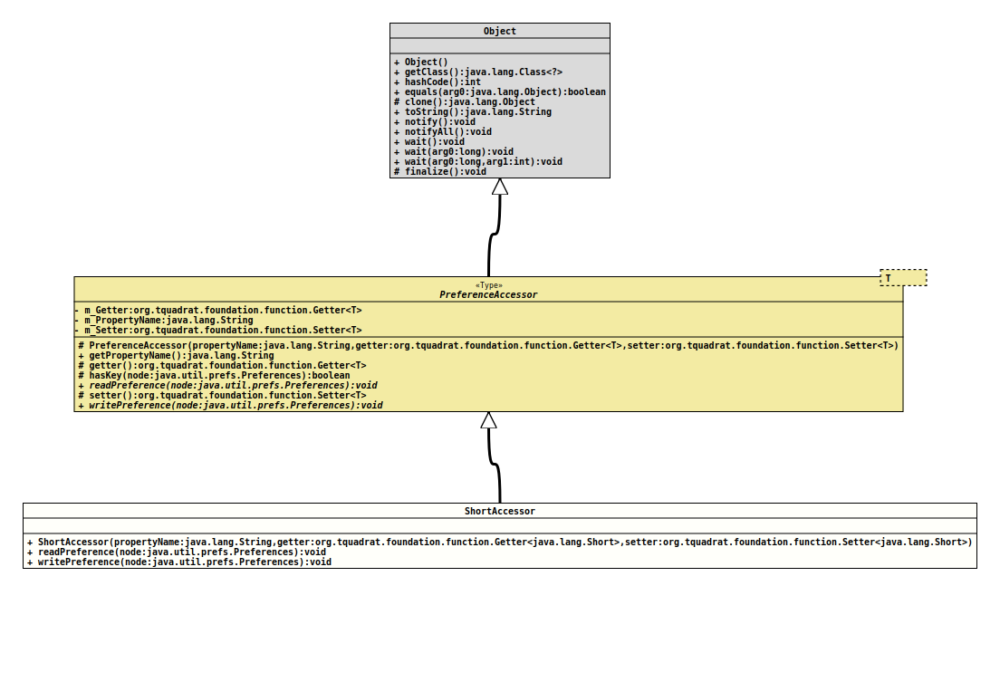

Class ShortAccessor
java.lang.Object
org.tquadrat.foundation.config.spi.prefs.PreferenceAccessor<Short>
org.tquadrat.foundation.config.spi.prefs.ShortAccessor
@ClassVersion(sourceVersion="$Id: ShortAccessor.java 1061 2023-09-25 16:32:43Z tquadrat $")
@API(status=STABLE,
since="0.0.1")
public final class ShortAccessor
extends PreferenceAccessor<Short>
The implementation of
PreferenceAccessor
for
Short.- Author:
- Thomas Thrien (thomas.thrien@tquadrat.org)
- Version:
- $Id: ShortAccessor.java 1061 2023-09-25 16:32:43Z tquadrat $
- Since:
- 0.0.1
- UML Diagram
-

UML Diagram for "org.tquadrat.foundation.config.spi.prefs.ShortAccessor"
{kind=link}
-
Constructor Summary
Constructors -
Method Summary
Modifier and TypeMethodDescriptionfinal voidreadPreference(Preferences node) Reads the preference value from the given node and writes it to the property.final voidwritePreference(Preferences node) Writes the preference value from the property and writes it to the given node.Methods inherited from class org.tquadrat.foundation.config.spi.prefs.PreferenceAccessor
getPropertyName, getter, hasKey, setter
-
Constructor Details
-
ShortAccessor
Creates a newShortAccessorinstance.- Parameters:
propertyName- The name of the property.getter- The property getter.setter- The property setter.
-
-
Method Details
-
readPreference
public final void readPreference(Preferences node) throws BackingStoreException, InvalidPreferenceValueException Reads the preference value from the given node and writes it to the property.- Specified by:
readPreferencein classPreferenceAccessor<Short>- Parameters:
node- The preference node.- Throws:
BackingStoreException- There are problems on reading the given node.InvalidPreferenceValueException- The preferences value cannot be translated to the property type.
-
writePreference
Writes the preference value from the property and writes it to the given node.- Specified by:
writePreferencein classPreferenceAccessor<Short>- Parameters:
node- The preference node.
-